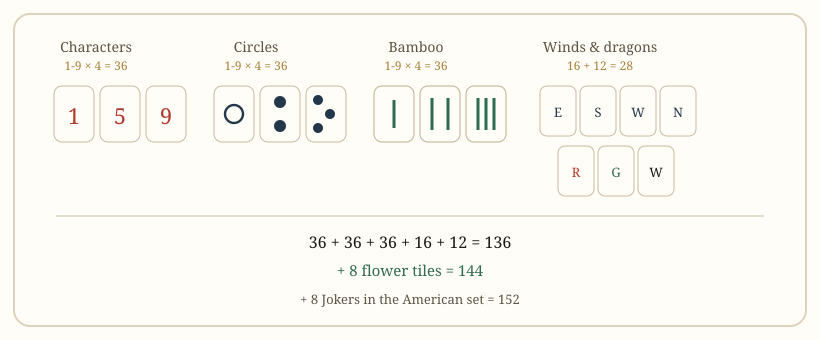

Getting started
Mahjong Tiles: Suits, Counts and Set Sizes
The number of tiles tells you which game you are about to play. Here is every tile in a standard set, what the duplicates are for, and how the wall is built.
At a glance
- Standard set
- 136 tiles: 3 suits × 36, 16 winds, 12 dragons
- With flowers
- 144 tiles: add four seasons and four plants
- American set
- 152 tiles: add eight Jokers and extra fives
- Copies
- Four of every numbered, wind and dragon tile
- Wall
- 17 stacks of two per player in a four-player game
- Hand
- 13 tiles, 14 for the dealer's opening turn

How many tiles are in a mahjong set?
A standard set has 136 tiles. That breaks into three numbered suits of 36 tiles each, 16 wind tiles and 12 dragon tiles. Add the eight flower tiles and you get 144, which is the count used by Chinese Official, Hong Kong and Taiwanese mahjong. American mahjong adds eight Jokers and some extra fives, reaching 152.
The count is not decoration. It tells you which rules are in play before anyone has to explain them.
The three numbered suits
Each suit runs from 1 to 9, with four copies of every number. That is 36 tiles per suit, 108 in total.
| Suit | English name | What it looks like |
|---|---|---|
| 万 | Characters | A Chinese numeral above the character for ten thousand |
| 筒 | Circles | Clusters of round dots, arranged in patterns |
| 索 | Bamboo | Vertical green sticks, one of which is usually a bird |
Players who learned the romanised names will also hear man, pin and sou. They mean the same three suits. This site uses the English names in body text and the romanised forms only as a cross-reference.
Suits matter beyond appearance: a run must stay inside one suit, so a 1 of characters and a 2 of circles can never be part of the same set. The only patterns that cross suits are those that explicitly require it, such as three colour straight.
Wind and dragon tiles
The 16 wind tiles are four each of east, south, west and north. The 12 dragon tiles are four each of red, green and white. Together they are called honour tiles, and they cannot form runs — only pairs, triplets and kongs.
At the table, winds do double duty: they name the seats and they mark the round. East is the dealer, and the round wind starts at east and advances after a full rotation. A wind that matches the round or your own seat is worth more as a triplet, which is why players watch which wind is "live".
Dragons are simpler: any triplet of red, green or white is a scoring pattern in almost every rule set, and all three together is one of the largest hands in the game.
Why are there four copies of every tile?
Four copies is what makes mahjong a game of information rather than luck. With four of each tile, if you can see three copies, an opponent cannot hold a pair of that tile. Counting visible copies is the basis of both offence and defence.
It also sets the arithmetic of a kong: four identical tiles is the maximum, so a kong literally uses every copy in the set. Once a kong is declared, nobody else can complete that tile, which changes what everyone else can wait on.
Flower tiles
There are eight flower tiles: four seasons and four plants, each numbered to match a seat. They behave differently in every style, and that difference confuses more beginners than any other rule.
- Chinese Official: a flower scores one fan, but flowers do not count toward the 8-fan minimum.
- Taiwanese: each flower scores one tai, and drawing one usually earns a replacement tile.
- Singaporean and Malaysian: flowers act as wild tiles for their matching suit.
- Japanese riichi: flowers are not used at all.
So the same physical tile can be a bonus, a wildcard or absent depending on where you sit down. Ask before the first hand, not after the first flower.
Jokers and the 152-tile set
American mahjong replaces the familiar set with a card-driven one. Eight Jokers join the set, and some tiles are printed with extra fives to support card patterns. Jokers are not free wildcards: they substitute only for tiles in groups of three or more. A Joker cannot complete a pair, a single tile or a run.
There is also a second wild tile, called Soap, represented by the white dragon, which substitutes only for numbers. Two different wild tiles with two different restrictions is the single biggest adjustment for players arriving from other styles.
How the wall is built
All 136 tiles are mixed face down and each player builds a wall of 17 stacks — two tiles high, 34 tiles per player. The four walls form a square. The dealer rolls two dice, and the total decides which wall and which stack to break.
From the break point, players draw in turn. Japanese rules reserve a section at the end, the dead wall, which supplies replacement tiles for kongs and holds the dora indicators. Chinese and Hong Kong games have no dead wall, so a kong is replaced from the live wall.
Dealing follows the same order everywhere: four rounds of three tiles, then the dealer takes one extra. Non-dealers end with 13, the dealer with 14.
What the tile count tells you
Before the first discard, count the tiles or check the box:
| Tiles | Likely style | What else to check |
|---|---|---|
| 136 | Hong Kong, riichi, British | Is chow allowed? Is there a minimum hand? |
| 144 | MCR, Taiwanese, Singaporean | Hand size: 13 or 16? Are flowers scoring or wild? |
| 152 | American (NMJL) | Is this year's card on the table? |
| 108 | Sichuan, some three-player rooms | Are honour tiles removed entirely? |
If the number fits none of these, the table is playing a local variant. The five-axis comparison lists what to ask next.
Quick answers
Are there 136 or 144 tiles in mahjong?
Both exist. 136 is the standard set without flowers. 144 is the same set plus the eight flower tiles, used in Chinese Official, Hong Kong and Taiwanese play.
How many of each tile are there?
Four copies of every numbered tile, wind and dragon. That is what limits a kong to four and makes tile counting possible.
Do you need a special mahjong table?
No. A flat table with enough room for four walls works. Automatic tables speed up shuffling and wall building but do not change any rule.
What is the dead wall?
A reserved section of 14 tiles kept apart in Japanese play. It supplies kong replacements and holds the dora indicators, so it is never drawn from directly.